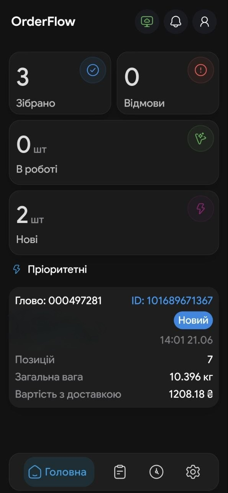

01
Сканування без пауз
Камера або ТСД, ручне введення штрихкоду, окремий режим для дрібних і низькоконтрастних кодів.
OrderFlow by DL Studio
Мобільний маршрут для збиральника: сканування, заміни, пакування, QR-видача та offline-first робота в одному процесі.

Зібрано навколо реальної роботи
Камера або ТСД, ручне введення штрихкоду, окремий режим для дрібних і низькоконтрастних кодів.
Локальні дані зберігають процес, а синхронізація завершує відправлення після відновлення зв’язку.
Причина, погодження з клієнтом, перевірка товару заміни та прозорий результат у замовленні.
Пакети, контейнери, штрихкод агрегатора та QR для каси — усе в одному послідовному процесі.
Інтерфейс у дії
Гортайте екрани або відкрийте будь-який кадр у повноекранному режимі.
Швидкий вхід за табельним номером і підтвердження робочого профілю.
Початок роботи
Потрібен Android-пристрій, доступ до корпоративної мережі та облікові дані співробітника.
Завантажити APKВідкрийте файл після завершення завантаження.
Android може попросити дозволити встановлення з браузера або файлового менеджера.
Використайте QR-конфігурацію або параметри, надані адміністратором.
Вкажіть табельний номер, підтвердьте користувача та оберіть робочу точку.
Робочий маршрут
Кожна дія продовжує попередню — весь контекст і наступний крок залишаються в одному робочому процесі.
Перевірте статус, магазин, кількість позицій і коментарі.
очікуєНове замовлення закріплюється за вами, активне — продовжується з поточного місця.
прийнятоВикористовуйте камеру, ТСД або ручний ввід; кількість і вага перевіряються окремо.
Уточніть кількість, зробіть заміну або зафіксуйте відмову з причиною.
заміна / відмоваТелефон, Telegram, Viber, WhatsApp або SMS доступні з картки замовлення.
погодженняПроскануйте пакети та контейнери або вкажіть кількість кнопками.
0 → 1OrderFlow покаже недобір, перебір і додані позиції перед завершенням.
4 з 4Передайте штрихкод агрегатора кур’єру та QR замовлення касиру.
завершеноКоротко про головне
Встановлення, перший вхід, сканування, offline-режим і оновлення застосунку.
Впливайте на наступну версію
Опишіть, що працює добре, чого не вистачає або де виникла проблема. Після натискання Telegram відкриється з готовим текстом — залишиться лише надіслати.
Безпека та дозволи
Використовується лише для сканування штрихкодів і QR-конфігурації.
Допомагають одразу побачити нове замовлення та стан синхронізації.
Операційні дані зберігаються на пристрої для стабільної offline-first роботи.
З’єднання використовується лише для корпоративної синхронізації та перевірки оновлень.
Опишіть питання або проблему — DL Studio допоможе розібратися з налаштуванням і робочим процесом.